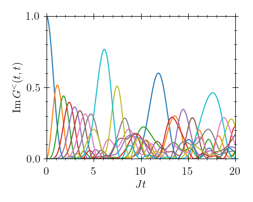

Tight-Binding Model
To get a feeling for how to use KadanoffBaym.jl, we begin by solving a simple example, the so-called tight-binding model:
\[ \begin{align*} \hat{H} &= \sum_{i=1}^L \varepsilon_i \hat{c}_i^{\dagger} \hat{c}_i^{\phantom{\dagger}} + J \sum_{\langle i, j\rangle}\left(\hat{c}_i^{\dagger} \hat{c}_j^{\phantom{\dagger}} + \hat{c}_j^{\dagger} \hat{c}_i^{\phantom{\dagger}}\right), \end{align*} \]
where the $\hat{c}_i^{\dagger},\, \hat{c}_i^{\phantom{\dagger}}$ are fermionic creation and annihilation operators. The model describes a bunch of electrons on a lattice that can hop to neighbouring sites via the coupling $J$. The usual quantities of interest can be obtained from the so-called lesser and greater Green functions defined by
\[\begin{align*} \left[\boldsymbol{G}^<(t, t')\right]_{ij} &= G^<_{ij}(t, t') = \phantom{-} i\left\langle{\hat{c}_j^{{\dagger}}(t')\hat{c}_i^{\phantom{\dagger}}(t)}\right\rangle, \\ \left[\boldsymbol{G}^>(t, t')\right]_{ij} &= G^>_{ij}(t, t') = -i\left\langle{\hat{c}_i^{\phantom{\dagger}}(t)\hat{c}_j^{{\dagger}}(t')}\right\rangle. \end{align*}\]
The equations of motion for these Green functions in "vertical" and "diagonal" time have a simple form and can be written compactly as
\[\begin{align*} \partial_t \boldsymbol{G}^{\lessgtr}(t, t') &= -i\boldsymbol{H} \boldsymbol{G}^{\lessgtr}(t, t') \\ \partial_T \boldsymbol{G}^{\lessgtr}(T, 0)_W &= -i[\boldsymbol{H},\boldsymbol{G}^{\lessgtr}(T, 0)_W], \end{align*}\]
where the square brackets denote the commutator, and the Hamiltonian matrix is given by
\[\begin{align*} \boldsymbol{H} &= \begin{pmatrix} \varepsilon_1 & J & & \\ J & \ddots & \ddots & \\ & \ddots & \ddots & J \\ & & J & \varepsilon_L \end{pmatrix}. \end{align*}\]
Remember also that in Wigner coordinates, the "forward" time is defined by $T = \frac{t+t'}{2}$ and $\partial_T = \partial_t + \partial_{t'}$.
First, we import KadanoffBaym.jl alongside Julia's linear-algebra package:
using KadanoffBaym, LinearAlgebraThen, we use the built-in data structure GreenFunction to define our lesser and greater Green functions
# Lattice size
L = 10
# Allocate the initial lesser and greater Green functions (time arguments at the end)
GL = GreenFunction(zeros(ComplexF64, L, L, 1, 1), SkewHermitian)
GG = GreenFunction(zeros(ComplexF64, L, L, 1, 1), SkewHermitian)As our initial condition, we put a single electron on lattice site one:
# Initial occupation
N_0 = 1.0
GL[1, 1] = zeros(ComplexF64, L, L)
GL[1, 1, 1, 1] = 1.0im
# Greater function follows from lesser by anti-commutation
GG[1, 1] = -im * I(L) + GL[1, 1]Note how accessing GreenFunction with only two arguments gives the whole matrix at a given time, i.e. GL[1, 1] is equivalent to GL[:, :, 1, 1].
For illustration, we use a Hamiltonian matrix $\boldsymbol{H}$ with unit hopping $J=1$ defined as
# Spacing of energy levels
ε = 5e-2
# Hamiltonian with on-site energies and nearest-neighbour hopping
H = SymTridiagonal([ε * (i-1) for i in 1:L], -ones(L))We define the equation of motion in the "vertical" time $t$ as
# Right-hand side for the "vertical" evolution
function fv!(out, times, h1, h2, t1, t2)
out[1] = -im * H * GL[t1, t2]
out[2] = -im * H * GG[t1, t2]
endFinally, the the equation of motion in the "diagonal" time $T$ follows by subtracting its own adjoint from the vertical equation:
# Right-hand side for the "diagonal" evolution
function fd!(out, times, h1, h2, t1, t2)
fv!(out, times, h1, h2, t1, t2)
out[1] -= adjoint(out[1])
out[2] -= adjoint(out[2])
endNote that the unused arguments times, h1, h2 are indeed only necessary when solving interacting systems (i.e. systems with integrals in their equations of motion). All that remains to be done is give our definitions to kbsolve!:
# Call the solver
@time sol = kbsolve!(fv!, fd!, [GL, GG], (0.0, 20.0); atol=1e-8, rtol=1e-6)When we plot(sol.t, mapreduce(permutedims, vcat, [imag(diag(GL[t, t])) for t in eachindex(sol.t)])), we obtain
